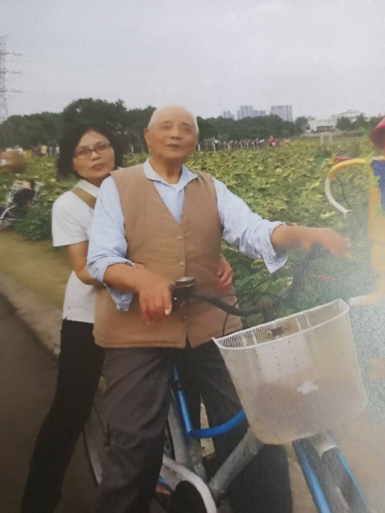
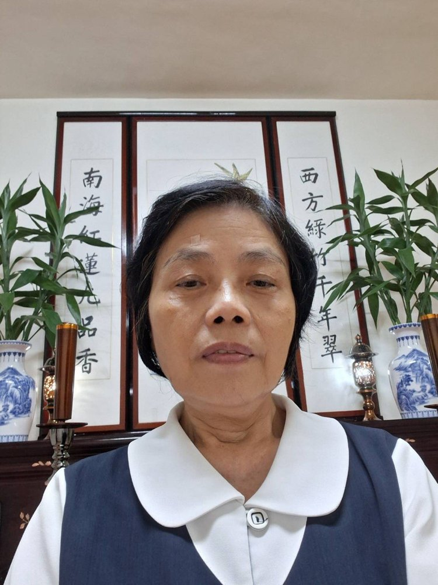
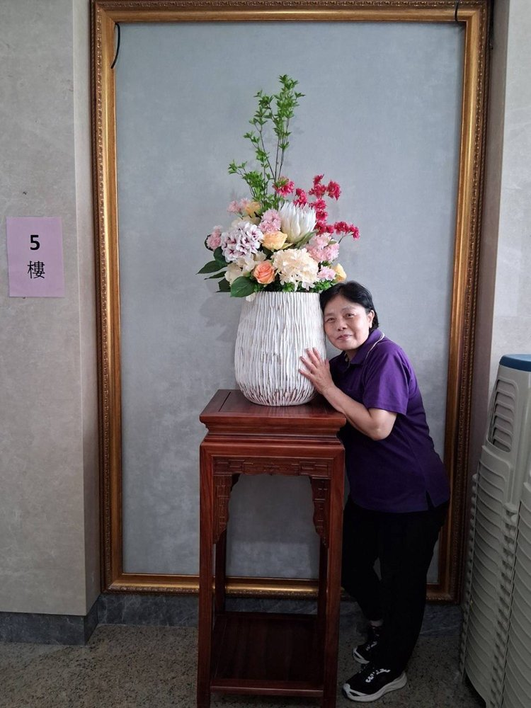

傅秀英
正德佛堂




正德50週年 — 心得分享
發一崇德 傅秀英
各位講師、各位前賢，大家好。後學正德傅秀英。
後學在民國七十七年求道，一直在桃園參班。民國一百年回到正德，繼續學習參班。
在這期間，後學非常感恩所有點傳師、講師、壇主們對後學的提攜與成全。尤其是理點傳師，非常照顧後學們，讓後學有如回到家的感覺，真的是非常的慈祥慈悲。還有書文大仙黃點傳師，也對後學的成全與提攜，讓後學非常感恩。
在這期間，後學最能感受的是，父母親能夠認理、肯定後學走的這條路，所以他們也跟著參與。爸爸媽媽也鼓勵兄弟姐妹們。尤其是爸爸媽媽歸空之後，兄弟姐妹們都回道場參與學習，讓後學深深感動——這就是道的珍貴寶貴。
爸爸媽媽今天已回歸，接著還能回到崇德，跟著不休息菩薩繼續在佛殿，讓後學深深感動。這只有在發一崇德，才有這份榮耀與殊勝。
感恩天恩師德，感謝白水聖帝、不休息菩薩聖靈庇佑。謝謝各位前賢。
（依傅秀英講師錄音整理，民國115年6月）